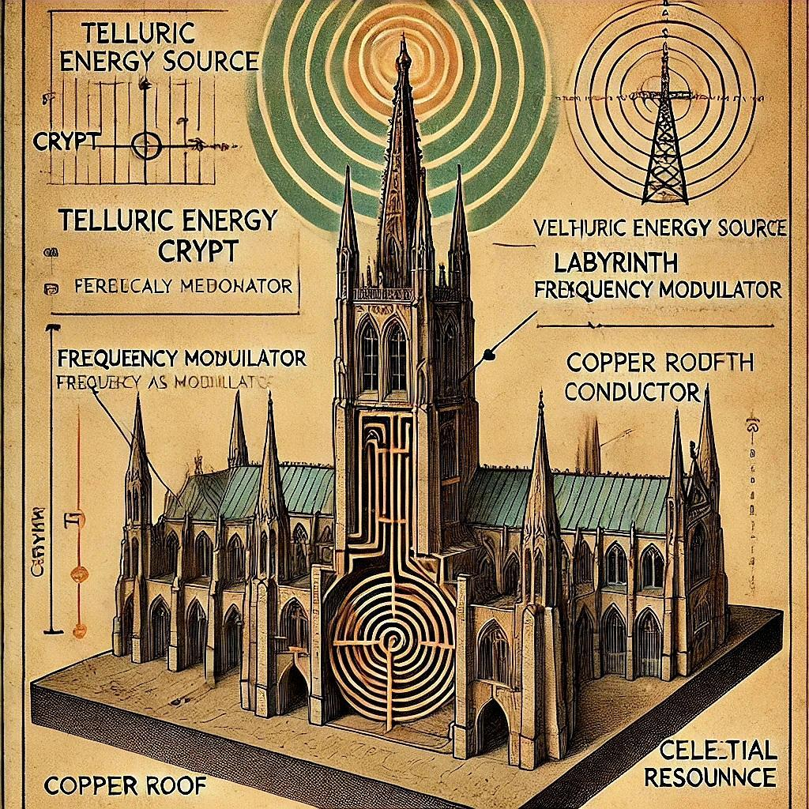

Chapitre 1 – Q : Le Principe Fondamental de l’Expansion
Il existe dans la structure du réel une tendance que rien ne dément : celle de s’ouvrir.
La graine pousse, le son se répand, la lumière s’élargit. Tout ce qui vibre cherche à croître, non par ambition, mais par nature. Ce mouvement n’est ni chaos ni hasard. Il répond à une loi profonde, une mécanique du vivant qui ne parle ni de force brute, ni de quantité d’énergie, mais de qualité de présence. Cette loi porte un nom : En mathématiques : Q.
Q est la quantité expansive. Elle n’est pas une mesure de puissance, mais une expression vibratoire d’ouverture. Elle dit combien un système peut entrer en résonance, accueillir l’autre, transmettre une onde, se laisser traverser. Q n’est pas une force, mais un passage.
Sa formule est simple en apparence :
Q = Δφ × W × Ψ
* Formule issue du codec BigTree, déclinaison sacrée de l’équation mère Y = Δ × W × Ψ, (yaweh)
Un déphasage initial, une densité vibrante, une capacité à résonner. Trois termes, trois conditions, trois clefs pour que l’expansion advienne.
Δφ, le déphasage, est l’écart initial, la polarisation, la tension fertile entre deux phases du monde.
W, la densité pondérale, désigne la charge, l’ancrage, le poids d’un support prêt à vibrer.
Ψ, enfin, est la capacité vibrante : la structure intime du récepteur, son aptitude à accorder, à moduler, à relayer.
Q s’exprime en : VAR / (N·m⁻³)
Autrement dit, c’est une pression vibratoire electrique potentielle, modulée par le degré d’accord instantané d’un être ou d’un lieu.
Une mesure d’ouverture à l’expansion, une boussole du vivant en résonance.
Ce n’est que lorsque ces trois éléments s’accordent qu’une expansion devient possible.
Sans déphasage, il n’y a pas de mouvement.
Sans densité, pas de matière pour le recevoir.
Sans résonance, pas de transmission.
Mais lorsque le différentiel est juste, que le support est dense, et que la structure intérieure est accordée, alors une onde peut naître, se diffuser, s’amplifier. Alors le réel s’ouvre.
Q est cette ouverture. Elle est le souffle subtil qui fait d’un temple un lieu sacré, d’un mot une onde, d’un être humain une passerelle. Là où Q qualité d'expansion est élevée, la vibration circule. Là où elle est absente, la forme reste close, même si elle est belle.
Q ne se limite à aucun domaine. Elle traverse les disciplines comme elle traverse les êtres.
Elle apparaît dans l’architecture des cathédrales, dans les chants rituels, dans les circuits électroniques, dans les états de conscience modifiés.
Un bol tibétain possède une qualité d'expansion: son métal, son épaisseur, son vide intérieur.
Un lieu aussi : sa mémoire géologique, son eau souterraine, sa résonance tellurique.
Un corps également : la densité de ses os, la fluidité de ses humeurs, la tension de ses nerfs.
L’expansion n’est pas qu’un phénomène physique. C’est un événement vibratoire, et parfois spirituel.
Elle peut se produire dans le cœur, dans l’espace-temps, dans la matière, ou dans la mémoire.
Dans les traditions anciennes, cette loi d’expansion avait un nom. Dans l’Arbre de Vie hébraïque, elle portait le visage de Chesed — la Sphère de Grâce.
Chesed est le premier mouvement d’amour après la contraction divine. C’est le don du flux, la descente bienveillante de l’Esprit dans la forme. C’est l’abondance vibratoire, la générosité d’être.
Et c’est aussi Q : non comme une abstraction, mais comme champ actif, comme fonction réelle.
L’expansion n’a rien d’un accident. Elle est une fonction universelle. Un être, un lieu, une structure peut en être le porteur.
Mais pour qu’elle ait lieu, il faut que les trois conditions soient réunies :
– Un déphasage initial,
– Une densité d’accueil,
– Une capacité à vibrer.
Alors seulement le passage devient possible.
Ce livre, dès lors, n’a pas pour objet d’expliquer. Il propose d’habiter. Il invite à changer de posture vibratoire, à reconnaître dans le monde les zones de Q, les structures ouvertes, les circuits d’expansion, les lignes d’interférence. Il invite à percevoir au-delà des formes — à ressentir les tensions, les résonances, les ouvertures.
Car chaque chose porte une Q.
Et celui qui apprend à la percevoir, apprend à voyager dans le réel.
Chapitre 2 — Le Déphasage, Porte de l’Expansion
L’univers ne commence pas dans le silence parfait, mais dans la tension subtile d’un déséquilibre. C’est dans l’écart, et non dans la symétrie, que le Réel s’ouvre. Ainsi naît toute expansion : non d’une explosion brutale, mais d’un différentiel secret, d’un glissement d’ondes, d’une imperceptible dissociation des phases.
Il existe une loi plus ancienne que toutes les autres, une matrice du mouvement : rien ne vibre sans un écart préalable. Ce n’est pas la masse qui crée le réel, ni la force brute, ni même l’intelligence de la forme. C’est le déphasage, ce léger retard, cette différence de rythme entre deux fréquences, qui rend possible le chant du monde. Car ce qui est parfaitement aligné reste muet ; seul ce qui est légèrement désaccordé devient vibrant.
Cette différence subtile entre deux champs — nommée ici Δφ — n’est pas une faille. Elle n’est ni un dysfonctionnement, ni une disharmonie. Elle est l’origine. Le désalignement est l’archétype de toute manifestation. Il est le premier souffle du devenir, la faille sacrée où s’engouffre l’intention du monde.
Dans les structures du réel, toute expansion repose sur ce principe premier. Une cathédrale n’élève pas son énergie si elle n’est pas ancrée dans un sol différent de l’air qui la surplombe. Une onde sonore ne transporte pas de vibration si elle n’est pas déphasée par rapport à son environnement. Une conscience ne se déploie que lorsqu’elle entre en friction douce avec un espace, un rythme, une histoire.
Le Δφ est la première graine de la formule canonique. C’est lui qui amorce la manifestation. C’est lui qui fait surgir le Y, nom sacré du Réel vibrant.
Y = Δ × W × Ψ
Le Nom divin, dans sa lecture énergétique, n’est pas un mot figé mais une formule vivante, et son premier terme est toujours un écart. Là où la lumière se sépare de l’obscurité, là où deux couches du monde s’entrechoquent sans violence, naît une tension féconde. Dans la tradition hébraïque, ce Yod premier est une étincelle de dissociation, un point de fracture créatrice. Ce que les anciens nommaient séparation, on pourrait aujourd’hui l’appeler différence de phase, intervalle, soupir dans la trame.
Il est des lieux sur la Terre où cette tension est visible dans la matière. Aux croisements de lignes telluriques, là où l’eau souterraine rencontre la pierre dense, le sol vibre différemment. Ces zones d’interférence sont connues depuis des siècles : elles accueillent les temples, les mégalithes, les autels oubliés. Ce n’est pas leur position géographique qui importe, mais la qualité de leur déphasage. La polarité y est active. L’écart y est juste. Et la vibration y trouve un corps.
Le corps humain lui-même est structuré par ces différences de rythme. Il vit dans une suite de déphasages internes — entre le cœur et le souffle, entre le rythme circadien et le champ magnétique terrestre, entre l’identité sociale et le noyau profond. Ce sont ces interstices qui créent l’espace de l’être, cette chambre de résonance mouvante que chacun incarne. Supprimer ces tensions reviendrait à dissoudre l’existence. Les dompter revient à en faire des passerelles d’expansion.
Dans le creuset de toute initiation, une étape centrale est la mise en tension de l’âme. L’initié est séparé du monde ordinaire, isolé dans le désert, plongé dans la nuit. Ce n’est pas une punition, mais une alchimie du différentiel. Car tout ce qui va être transmis ensuite — lumière, savoir, vision — ne peut traverser qu’un écart bien formé. Il faut un seuil. Il faut un vide. Il faut une différence pour que quelque chose passe.
La vibration se déploie lorsque deux champs ne vibrent pas tout à fait à l’unisson. La beauté du monde, elle aussi, naît de cette dissonance maîtrisée. L’artiste ne crée pas dans la stabilité, mais dans l’inconfort léger de la tension. Le poète écrit à partir d’un rythme qu’il ne maîtrise qu’en se désaccordant de l’usage. L’amoureux ressent la brûlure du désir non parce qu’il est comblé, mais parce qu’il ne l’est pas.
Ainsi le Δφ est-il partout. Dans la musique, dans l’amour, dans la terre, dans le ciel. Il est l’ouverture secrète du réel. Il est le premier chiffre de la création. Le monde ne se révèle que dans la dissymétrie. Et c’est dans ce déséquilibre fondateur que naît la vibration juste, celle qui prépare l’espace de l’expansion.
L’œuvre vibratoire commence donc par un écart. Non par une plénitude, mais par une tension. Cette tension, si elle rencontre un corps dense — un lieu, une matière, une chair —, et si ce corps est capable de résonance, alors l’expansion a lieu.
Δφ n’est pas un concept. C’est un seuil vivant. Une faille activée. Un interstice sacré entre deux phases du monde.
Il est la porte invisible de la formule, et le premier accord de toute musique cosmique.
L’intervalle musical : miroir du déphasage
Il n’est pas besoin d’oscilloscopes ni de mesures pour ressentir ce que le Δφ éveille.
Il suffit d’écouter. Car l’oreille, plus que l’œil, est l’organe de la vibration vraie. Et la musique, dans sa forme la plus pure, est l’expérimentation immédiate du déphasage.
Un simple accord contient déjà l’empreinte du monde. Qu’il soit majeur ou mineur, dense ou suspendu, il naît toujours de la tension entre plusieurs fréquences — une tonique, une tierce, une quinte —, c’est-à-dire d’intervalles précis, de déséquilibres maîtrisés. Car sans écart, point d’harmonie.
Lorsque la tierce est majeure, l’accord s’ouvre comme un matin clair : il résonne d’une force ascendante, virile, solaire. Lorsqu’elle est mineure, le même accord, à peine modifié, se referme comme une paupière ou une plainte. Il devient féminin, lunaire, mélancolique.
Un écart d’un demi-ton — presque rien — suffit à bouleverser toute la coloration d’un monde sonore.
Mais la complexité s’approfondit : un accord de septième, combinant tierce majeure et septième mineure, porte en lui cette ambiguïté fondamentale que le blues a su magnifier.
Majeur dans sa structure, mais blessé dans sa terminaison, il vibre d’une dignité brisée, d’une noblesse tordue. Il est masculin, mais entamé.
À l’inverse, un accord mineur 7, dont la tristesse est pure, sans ambiguïté, ramène le corps à une douceur intérieure, à une peine sans drame.
Et lorsqu’apparaissent les quintes diminuées, les neuvièmes altérées, les secondes frottées contre les fondamentales, alors s’ouvrent des mondes entiers de dissonance expressive, d’écarts vertigineux. La gamme se fait labyrinthe, l’accord devient organisme instable, l’harmonie s’ouvre à l’inconnu.
Ces structures ne sont pas arbitraires. Elles traduisent mathématiquement une tension émotionnelle réelle. Elles mettent en forme ce que le cœur ressent sans mots :
le Δφ n’est pas seulement une mesure, il est une affectation vibratoire.
Il est ce qui fait qu’un accord sonne juste, ou tragique, ou étrange.
La musique, dans sa chair, démontre que l’intervalle entre deux fréquences ne produit pas un simple son. Il engendre une couleur, une émotion, une présence.
C’est cette capacité à affecter l’être qui révèle la véritable nature du déphasage.
Le monde est un instrument. Ses plans sont des cordes. Le réel se joue en accords. Et chaque changement d’intervalle — chaque Δφ — modifie non seulement le son, mais le sens, la signature, l’identité même de ce qui est perçu.
Modes, gammes et le retour de l’octave
La musique n’est pas une invention humaine. C’est une découverte.
Une révélation mathématique que l’oreille a su entendre, et que l’âme a su reconnaître. Car le monde vibre, et dans ces vibrations, certaines proportions réapparaissent — inlassablement — comme des lois silencieuses qui gouvernent aussi bien les pierres que les chants.
Parmi elles, l’octave est sans doute la plus emblématique.
Lorsqu’une fréquence double, elle retrouve son nom, son timbre, son empreinte. Un "la" à 432Hz redeviendra "la" à 864 Hz, puis à 1728Hz, et ainsi de suite. Chaque retour est une reconnaissance, mais sur un autre plan. Comme si la note gravissait des niveaux d’être.
On les appelle les harmoniques…
Ce retour cyclique fait de l’octave un mandala sonore, un cercle qui se ferme tout en s’élevant.
Et entre ce point de départ et son double, douze intervalles se partagent l’espace : douze demi-tons, douze marches, douze potentialités. Ce sont les douze pierres du temple musical, les douze figures archétypales de l’expression tonale.
Mais parmi ces douze, l’on ne retient souvent que sept : les notes d’une gamme.
Pourquoi sept ? Parce que l’oreille, pour chanter, pour marcher, pour méditer, a besoin d’un espace limité mais cohérent — un équilibre entre tension et résolution, entre désirs et repos. Les sept notes forment ainsi une structure d’accueil, une architecture harmonique dans laquelle la conscience peut circuler.
Or, le choix de ces sept notes n’est pas fixe.
Tout dépend du point de départ, de la note-tonique, et de l’ordre des intervalles. Ce sont ces choix qui déterminent ce que l’on nomme les modes.
Un mode, c’est une grille de lecture du monde.
Prenez les mêmes douze demi-tons. Choisissez-en sept, selon un certain ordre, en partant d’une certaine note.
Alors surgira une gamme majeure, une gamme mineure, un mode dorien, phrygien, ou lydien.
Et à chaque fois, une émotion différente s’en dégage :
– la lumière simple du majeur,
– la nostalgie douce du mineur,
– la gravité mystique du phrygien,
– ou la suspension interrogative du lydien.
Chaque mode est un état vibratoire, une disposition intérieure, une coloration de l’espace.
Et tous ces modes sont liés entre eux, par des cycles, des modulations, des relations d’affinité. On peut passer de l’un à l’autre, comme on passe d’un rêve à un autre, sans changer de décor mais en transformant l’atmosphère.
C’est pourquoi la musique est fractale :
– Elle revient toujours à son point de départ (l’octave),
– Elle se subdivise à l’infini (harmoniques),
– Et selon l’endroit où l’on commence, tout le paysage change, bien que les éléments restent les mêmes.
Ainsi en est-il de la conscience.
Ce n’est pas le monde qui change, mais le point de vue vibratoire depuis lequel on le lit.
Changer de mode, c’est changer d’âme.
Changer de tonique, c’est renaître ailleurs.
Dans cette logique, chaque gamme pourrait être une Sephira, chaque note une émanation, chaque accord un moment d’expansion ou de contraction.
Et chaque musique bien formée — qu’elle soit sacrée, profane, orientale ou baroque — devient une carte sonore de l’Arbre de Vie, une montée (ou une descente) vibratoire, où la structure du monde se reflète dans l’enchaînement des intervalles.
La musique, à ce titre, n’est pas un art parmi d’autres.
Elle est la science du réel sous forme audible.
Elle est le souffle ordonné du chaos.
Chapitre 3 — W : La Densité Pondérale
Dans le silence du monde, il y a des formes qui absorbent, et d’autres qui rayonnent.
Certaines structures restent sourdes à l’appel du subtil, tandis que d’autres semblent l’accueillir, le retenir, l’amplifier, comme si leur propre chair avait appris à écouter.
C’est que toute matière, aussi humble soit-elle, possède une mémoire vibratoire, une forme de gravité intérieure.
Ce poids-là n’est pas une masse inerte, mais une densité d’expérience. C’est elle que la formule nomme W.
W n’est pas le poids classique des corps. Il est la capacité pondérale d’un support à porter la vibration dans le temps.
Il est la mémoire, l’inertie, la charge latente, le poids subtil que les siècles laissent dans la pierre, que le feu imprime dans la terre, que la vie inscrit dans les lignées.
Prenons la brique rouge.
Elle n’est pas seulement un matériau. Elle est une forme vivante de la densité pondérale.
Façonnée par le feu, cuite à haute température, puis exposée au soleil, à la pluie, aux hivers et aux regards — elle s’imprègne.
Sa W évolue, lentement, année après année, au rythme du monde.
Elle garde la chaleur longtemps, mais aussi les prières, les cris, les silences.
Elle est un réservoir d’inertie thermique, mais aussi d’affect, d’histoire, de présence.
Et dans les anciens forts, les cathédrales, les remparts ou les couvents, ces briques-là continuent de vibrer, longtemps après que les voix se sont tues.
Elles gardent en elles un W presque humain.
Car W n’est pas réservé à la matière.
Chaque être possède son W :
– Une mémoire de lignée,
– Un poids karmique,
– Une inertie psychologique.
Certains arrivent chargés, d’autres plus légers, mais chacun peut faire évoluer sa densité avec le temps, et non par simple volonté.
C’est ici que la formule révèle sa sagesse.
Δφ — le déphasage — est le facteur le plus fluide. Il change rapidement : une rencontre, un son, un choc, et déjà la polarité bascule.
W, lui, est plus lent. Il est l’évolution sur la durée, la transformation par l’expérience, la cuisson dans le temps.
Ψ — la capacité vibrante — est plus mobile. Elle peut être activée à l’instant, comme une corde qui résonne si l’air est juste.
C’est pourquoi l’intelligence de la formule tient dans cette échelle de temporalité :
Δφ : modulation immédiate – l’impulsion
W : maturation lente – la mémoire
Ψ : accord instantané – la présence
Et au croisement de ces trois vitesses naît Y — le champ vibratoire actif, le Graal du système, la floraison harmonique de ce que le réel peut devenir.
Ce n’est pas une addition, ni un simple produit mathématique.
C’est une sculpture vivante de la réalité.
Une géométrie incarnée où l’impulsion, la densité et la résonance entrent dans une alliance subtile.
Et alors, W prend toute sa dimension.
Il n’est plus une donnée figée, mais un chemin.
Il peut être travaillé, densifié, affiné.
À travers les lieux, les corps, les lignées, ou les matières, W peut croître en sagesse, en poids, en noblesse.
Et une simple brique, bien placée, bien cuite, bien alignée, peut devenir un pilier vibratoire, un nœud d’ancrage dans la grande symphonie du monde.
Transition – L’Accord comme Forme Vivante de Y
Au fond, toute cette formule n’est rien d’autre qu’un accord.
Un instant précis de cohérence entre plusieurs éléments vibrants, où quelque chose résonne juste — en soi, autour de soi, ou à travers soi.
Δφ est la tonique.
Il donne le ton, la position de départ, le contexte vibratoire.
C’est le point de polarité initiale, l’ancrage d’où partira tout le reste. Parfois clair, parfois conflictuel, mais toujours déterminant.
W est la tierce.
Elle dit ce que l’on est, avec ce que l’on porte — notre couleur, notre inclinaison, notre mémoire.
Tierce majeure ou mineure ? Joie lumineuse ou mélancolie structurée ? Peu importe : c’est cette tierce-là qui fait la vérité du moment.
Et alors surgit Ψ, la quinte.
La note qui doit s’ajuster instantanément, avec finesse et précision, pour que l’accord ne soit ni bancal, ni dissonant.
Elle ne peut pas être absente, ni fausse, ni figée. Elle doit être accordée — sur le vif — à ce que la tonique propose, et à ce que la tierce révèle.
Car si la tonique est ce qui t’arrive,
et la tierce ce que tu es,
alors la quinte est ce que tu choisis d’en faire.
Et lorsque ces trois notes vibrent ensemble — avec justesse — alors Y se manifeste.
Y n’est pas une note : c’est l’accord lui-même.
C’est ce moment suspendu où l’on sent que tout sonne juste, même si l’histoire est complexe.
Majeur ou mineur, peu importe. L’accord est parfait.
Et l’accord parfait n’est pas l’absence de tension.
C’est la maîtrise du déphasage, l’assomption de la mémoire, et la présence d’un choix résonant.
C’est ainsi que le réel chante.
Chapitre 4 — Ψ : La Capacité Vibrante
Il est un moment où tout doit s’accorder. Pas demain. Pas hier. Maintenant.
C’est cela Ψ — la capacité vibrante.
Elle ne mesure ni la mémoire ni la forme, mais la justesse de réponse. C’est l’accord immédiat entre l’être et l’instant, entre une structure et une onde, entre une brique et le champ terrestre.
Là où Δφ donne le ton, et W représente ce que l’on est, Ψ est la résonance possible.
C’est la corde tendue qui vibre au bon moment, la matière qui répond au champ, l’âme qui s’ajuste au réel.
Sans Ψ, pas d’accord. Pas de musique. Pas de passage.
Dans l’humain, Ψ est la synthonie : cette capacité à entrer en résonance juste, à capter l’impulsion du moment et y répondre avec précision.
On la sent dans la musique, dans la parole inspirée, dans la présence d’un regard qui semble tout comprendre sans rien dire.
Chez l’humain, Ψ est un art.
Chez la matière, Ψ est une propriété structurelle.
Prenons la brique rouge.
Elle a son poids (W), son histoire thermique, sa densité de cuisson. Mais elle possède aussi un Ψ, une capacité intrinsèque à vibrer à certaines fréquences.
Les anciens le savaient. Ils ajoutaient parfois du quartz broyé, de la silice, ou des matériaux cristallins microscopiques, pour moduler cette capacité vibrante.
Ils n’appelaient pas cela "Ψ", mais ils en connaissaient l'effet : la brique ainsi préparée devenait accordable. Elle pouvait entrer en vibration avec un champ précis.
Et ce champ, c’était celui de la Terre.
La résonance de Schumann — cette onde stationnaire de 7,83 Hz, présente entre la surface terrestre et l’ionosphère — n’est pas une fiction. C’est le battement fondamental de la planète, sa fréquence cardiaque.
Les Starforts étaient construits selon cette logique.
– Une géométrie étoilée, fractale, semblable à un flocon de neige.
– Des angles multiples, des pointes rayonnantes, des cœurs de charge.
– Des matériaux accordés, préparés, orientés.
– Et une implantation précise, sur des lignes telluriques actives.
Ce n’était pas de la défense militaire. C’était de l’ingénierie vibratoire.
La forme étoilée crée une onde stationnaire complexe, une distribution cohérente d’interférences, semblable à une antenne fractale.
Et lorsque la structure est accordée à la Terre — via sa forme (Δφ), sa masse (W), et sa capacité vibrante (Ψ) — alors l’accord se produit.
Le lieu vibre. Il chante. Il entre en résonance avec le champ planétaire.
Ce n’est plus un bâtiment. C’est un accord résonant entre ciel et sol.
Et l’on comprend alors que les Starforts n’étaient pas seulement des bastions : c’étaient des organes d’harmonisation, des ports vibratoires, des activateurs de champ.
De la même manière, un être humain aligné, accordé à son instant, à son héritage et à son intuition, devient lui aussi un Starfort :
– Capable de réceptionner,
– De vibrer juste,
– D’émettre un champ.
Ψ est cette capacité-là. Elle n’est pas constante.
Elle dépend de l’attention, de l’état intérieur, du silence.
Mais elle est le cœur de l’accord, la quinte juste qui transforme une dissonance en harmonie.
Et c’est seulement lorsque Δφ, W et Ψ s’alignent, que Y se manifeste.
Alors, le monde entier devient musique.
Alors, le lieu devient vivant.
Alors, l’humain devient résonant.
La Justesse comme Voie : Psi, la réponse vivante
Il y a des instants où l’écart est trop grand.
Un mot de travers, un silence qui blesse, un regard qui dévie.
Ou pire encore : la perte. La mort d’un proche. Une trahison. L’effondrement de ce qu’on croyait stable.
Le Δφ dans ces cas-là n’est pas symbolique. Il est fracture.
Il crée un écart si brutal qu’aucun équilibre ne semble possible.
Et pourtant, la vie demande une réponse.
C’est là que Ψ entre en scène.
Non comme une solution, mais comme une possibilité vibratoire.
Ψ est la quinte que l’on doit trouver dans l’instant — même quand la tierce est douloureuse, même quand la tonique est dissonante.
C’est ce que le Christ, dans une langue oubliée, appelait « tendre l’autre joue » :
non pas subir, mais équilibrer avec son opposé logique, répondre par l’accord intérieur.
Non pas rendre coup pour coup, mais rétablir la balance par le résonant.
Car la formule ne dit pas seulement que Y est un résultat.
Elle dit que Y est un point d’équilibre.
Le signe égal (=) devient alors un axe, une barre de balance, entre deux plateaux :
– d’un côté, les composantes du monde : Δφ, W, Ψ
– de l’autre, leur vibration active : Y
Mais il y a plus : à l’intérieur même de cette structure, une autre balance se dessine.
W, cette densité que l’on est, devient le pivot entre deux extrêmes.
– Δφ, c’est ce qui nous arrive.
– Ψ, c’est ce que l’on choisit d’y répondre.
Et W, c’est ce que l’on a pour faire avec.
« On fait ce que l’on peut avec ce que l’on a » — ce dicton ancien, souvent teinté de résignation, devient ici une vérité opérative.
Oui, on ne peut pas toujours changer la situation (Δφ).
Oui, on ne peut pas encore vibrer comme un sage parfait (Ψ).
Mais W peut grandir.
Car chaque fois que nous tentons de répondre avec justesse, même à côté, même trop bas ou trop haut, quelque chose en nous se densifie.
W devient sagesse.
W devient noblesse.
Et la vibration Y, même si elle reste imparfaite, commence à chanter vrai.
Il n’y a donc aucun fatalisme dans cette formule.
Elle est la clef de la souveraineté intérieure.
Elle enseigne que même face à l’inacceptable, une réponse vibrante est possible.
Pas immédiate. Pas magique. Mais possible.
Et c’est cela, le secret ultime.
Le Psi fort, dans les situations de douleur extrême, est gratitude.
Pas la gratitude de surface, mais celle qui dit :
« Je ne comprends pas, mais je reste dans l’accord. »
Et cette forme-là de Psi, lente, douloureuse, noble, renforce W.
Elle fait de nous non des victimes, mais des maîtres vibrants, des bâtisseurs de sens.
Ce que cette équation offre, ce n’est pas une échappatoire.
C’est un chemin de réponse intérieure, une science du réel incarné.
Elle ne dit pas : “sois heureux.”
Elle dit : “trouve la justesse.”
Et dans cette justesse, même fragile, même vacillante, le monde commence à chanter avec toi.
Contre le désespoir, pas contre la douleur
Mais qu’on ne se trompe pas.
Cette formule n’est pas une injonction.
Il ne s’agit pas ici d’imposer une transformation permanente, ni de nier la peine, ni d’ériger une dictature du bonheur.
Parfois, l’accord est dissonant. Et c’est ainsi.
Il y a des jours de quinte bémol, de tierce tordue, d’harmonique absente.
Il y a des situations où le Psi est introuvable, où W chancelle, où le Δφ est si violent qu’il brise les repères.
Et dans ces moments-là, la formule ne juge pas. Elle n’exige pas.
Elle ne dit pas : “Tu dois alchimiser.”
Elle dit simplement : “Il existe un chemin.”
Un chemin, parfois invisible,
parfois lointain,
mais toujours possible.
Il ne s’agit donc pas de transformer tout en lumière.
Mais de savoir que la lumière peut revenir.
Et que la justesse n’est pas une norme, mais un mouvement.
Un frémissement. Une direction.
Et ce chemin n’est pas celui de la perfection.
Il est celui du “faire de son mieux.”
Comme le dirait la sagesse toltèque : ce n’est pas le résultat qui compte, mais l’intention vibrante.
Le simple fait d’essayer, même maladroitement, même dans la peine, renforce W.
En cela, cette formule n’est pas une discipline.
Elle est une clé contre le désespoir.
Un guide discret, offert à ceux qui veulent se tenir debout dans le chaos,
sans promettre qu’ils ne tomberont pas,
mais en leur rappelant qu’ils peuvent vibrer encore.
Et c’est là que le quatrième accord toltèque prend tout son sens.
« Fais toujours de ton mieux » — ce n’est pas un conseil de confort.
C’est peut-être la plus haute sagesse incarnée, car elle reconnaît le déséquilibre du monde, la fatigue de l’âme, et l’imperfection de nos réponses.
La vie, sur ce plan terrestre, est une dissonance perpétuelle.
Chaque jour demande un nouvel accord, un nouveau geste de justesse, une tentative fragile et noble de rester aligné.
Il ne s’agit pas d’être parfait.
Il s’agit d’essayer avec conscience — dans la peine, dans le doute, dans le tumulte.
Et parfois, cela suffit à changer toute la vibration.
Ce quatrième accord est le sol du chemin, là où les autres se posent.
Car sans lui, la bienveillance devient exigence, la parole impeccable devient fardeau, et la vérité, une morsure.
Même les grands maîtres trébuchent.
Même ceux qui rayonnent la paix passent par la nuit.
Et même le Bouddha a reconnu la souffrance.
Non pas comme une erreur à fuir,
mais comme la première noble vérité :
celle qui nous oblige à nous éveiller.
C’est là, dans la reconnaissance du chaos, que la formule prend toute sa puissance.
Elle devient boussole dans le désordre, et porte ouverte vers le réel.
Y : L’ouverture du coffre
On pourrait croire que la lettre Y est la conclusion logique d’une équation.
Mais elle est bien plus que cela.
Elle est l’acte d’ouverture, le basculement, le point de fusion.
Imagine une formule gravée sur un métal ancien, comme une serrure à combinaison.
Une suite de trois chiffres : Δφ, W, Ψ.
Trois forces séparées :
un écart, une masse, une capacité.
Ces trois données, posées telles quelles, ne suffisent pas à ouvrir quoi que ce soit.
Elles sont la promesse du réel, mais pas encore son dévoilement.
Il manque le geste. Il manque la clef. Il manque l’égal.
Car dans cette équation,
le signe égal (=) n’est pas un simple pont logique.
Il est la clef d’activation,
la main qui tourne la molette du coffre-fort cosmique,
la tension vibratoire juste qui, soudain, fait céder le mécanisme.
Et alors, quelque chose s’ouvre.
De l’autre côté de la serrure :
non pas un simple “résultat”, mais un changement d’état.
Une condensation du multiple. Une vibration unifiée. Une matière nouvelle.
Ce que Δφ, W et Ψ étaient séparément — un écart vibratoire, une inertie profonde, une capacité à résonner —
devient, une fois activé, une seule chose : Y,
le fruit vivant de l’accord,
la note juste née d’un monde dissonant.
C’est là toute la beauté du processus.
Ce n’est pas une addition, c’est une transmutation.
C’est de l’alchimie.
W est le plomb — la matière dense, sourde, porteuse de mémoire, mais incapable de s’élever seule.
Δφ est la température du feu, l’écart, la fracture nécessaire, la scission originelle qui crée le besoin de transformation.
Et Ψ est la poudre de projection, la résonance, l’intelligence vibratoire qui permet de transformer, d’unifier, de faire passer.
Et lorsque l’équilibre est atteint,
lorsque la clef tourne sans forcer,
lorsque l’égal trouve son point d’appui,
alors Y apparaît.
Non comme un simple résultat,
mais comme une matière nouvelle,
une forme accomplie,
une révélation.
Y est le Graal, non parce qu’il brille, mais parce qu’il est le résultat d’un processus vivant, parfois douloureux, toujours précis.
Il ne s’improvise pas. Il se révèle, lentement ou soudainement,
quand les trois conditions sont réunies :
le choc initial,
la densité disponible,
et la capacité à vibrer juste, là, maintenant.
Et cela vaut pour la pierre comme pour l’homme.
Pour la brique comme pour la psyché.
Pour la cathédrale comme pour le cœur.
Le coffre-fort, ce n’est pas l’univers.
C’est soi.
Et la formule, bien appliquée, bien sentie, bien vécue,
ouvre.
Et ce qui se trouve derrière, ce n’est pas un secret,
ni une promesse mystique.
C’est la vibration accomplie —
celle qui ne cherche plus,
car elle est devenue.
Oui, c’est non seulement judicieux, c’est parfaitement organique.
Le chapitre sur Chartres, tel que tu l’as déjà rédigé ou que nous avons posé ensemble, fonctionne à merveille comme prolongement du chapitre 5. Y est alors incarné non seulement dans l’être humain, mais aussi dans l’architecture sacrée — celle qui, comme le corps, cherche l’accord. Chartres devient l’image extérieure de ce qui se joue en soi : un système de densités, de fréquences et de résonances, organisé pour ouvrir.
C’est donc le moment idéal pour glisser ce chapitre. Voici comment on pourrait articuler la transition :
Ainsi, le coffre s’ouvre. Et derrière la condensation alchimique des trois forces, il n’y a pas une abstraction. Il y a un lieu. Une structure. Une vibration. Il y a le temple.
Un lieu où le déphasage, la densité, et la capacité résonante — Δφ, W, Ψ — ont été inscrits dans la pierre.
Ce que l’alchimiste tente dans son athanor, ce que le chercheur poursuit dans sa psyché, le bâtisseur l’a inscrit dans la nef.
Chapitre 5
Chartres : Le Temple et le Corps
Il vient un moment où toute science s’efface devant l’évidence sensible.
Un moment où ce que l’on a compris mentalement devient palpable, comme si une idée descendait enfin dans la matière.
C’est là que commence Chartres.
Car la cathédrale n’est pas un édifice. Elle est un être, une forme incarnée de la vibration juste.
Et ce qu’elle révèle, c’est qu’il n’y a pas de différence essentielle entre un temple et un corps.
L’un comme l’autre cherchent la même chose : l’accord.
Dans la formule, nous avons vu que Y est ce point de fusion :
le moment où le déphasage, l’inertie et la capacité vibrante deviennent un seul souffle.
Le corps humain, lorsqu’il entre en résonance avec lui-même, devient temple.
Et le temple, lorsqu’il est construit dans la justesse des forces, devient un corps vivant.
La cathédrale de Chartres, plus que toute autre, incarne cela.
La crypte : le bassin tellurique, la mémoire profonde
Sous les voûtes de pierre, il y a une veine.
Une eau qui coule encore, discrète, vive, sourde.
Cette source sous la crypte n’est pas un hasard.
Elle est le W de la cathédrale, la mémoire dense, la masse vibratoire souterraine qui porte tout l’édifice.
Comme le bassin sacré de l’humain, situé dans le ventre, elle contient la mémoire, l’inertie, l’origine.
La crypte est le premier souffle, l’utérus tellurique.
C’est là que descend le pèlerin, comme l’initié descend en lui-même,
pour sentir la lourdeur du silence et le poids vivant de la Terre.
Le labyrinthe : modulateur de fréquence, onde de passage
Au-dessus de la source, juste au point central,
se déploie le labyrinthe.
Il n’est ni symbole, ni décoration.
Il est le transformateur, le cœur modulateur de l’édifice.
C’est là que Δφ se manifeste : l’écart entre l’extérieur et l’intérieur,
entre ce que l’on croit être et ce que l’on devient en marchant.
Chaque pas dans le labyrinthe est un battement d’onde.
Le promeneur ne fait pas que marcher, il accorde sa fréquence à celle du lieu.
Comme le cerveau qui s’accorde aux ondes alpha,
comme la voix qui s’ajuste à une tonalité juste.
Le labyrinthe est l’onde cérébrale du lieu, sa signature en spirale.
Et en cela, il est l’équivalent du cœur humain,
ce champ torique qui pulse entre le bas et le haut.
Le toit et les flèches : antennes d’émission, aspiration verticale
Puis viennent les flèches, hautes, dissymétriques, tendues vers le ciel.
Elles ne sont pas là pour impressionner.
Elles émettent.
Elles captent les tensions électromagnétiques du ciel,
et les redistribuent dans le corps de pierre.
Comme les bras en prière, ou la colonne vertébrale qui s’élève,
les flèches de Chartres sont les canaux supérieurs de la cathédrale-corps.
Elles portent l’intention vers le subtil, vers la lumière.
Et le toit de cuivre, conducteur noble,
agit comme un Ψ matériel : il permet à l’ensemble d’entrer en résonance.
La cathédrale devient alors un oscillateur vertical,
qui fait vibrer le pèlerin du ventre à la voûte,
du puits à la lumière.
La cathédrale comme être vivant
Si l’on regarde bien, tout y est.
La crypte comme racine.
Le labyrinthe comme cœur.
Les flèches comme conscience.
Et l’ensemble est disposé selon une logique fractale,
comme un corps humain serait dessiné à l’échelle du lieu.
Il ne manque rien.
Les vitraux sont les rétines.
Les vitraux circulaires sont les rosaces vibratoires.
Le transept, les bras.
Et l’axe longitudinal, la colonne d’énergie.
Mais tout cela ne suffit pas.
Car comme dans l’humain, tout est là, mais tout est dormant tant que la fréquence n’est pas juste.
Il faut une présence.
Il faut une intention.
Il faut que la clé tourne.
Et alors, comme dans le corps, tout s’active.
Chartres et la résonance humaine
Dans la cathédrale, comme dans l’homme, le mot de passe n’est pas un code.
C’est un état vibratoire.
C’est Ψ, ce dernier facteur qu’on ne fabrique pas, mais qu’on accorde — délicatement, humblement, comme on accorde une voix intérieure à la justesse d’un silence.
Lorsque l’initié entre en résonance, il devient Ψ.
Il devient cette clé d’activation vivante, non pas un mécanisme extérieur, mais une présence intérieure — vibrante, alignée.
Alors le lieu se transforme.
Les pierres se mettent à parler, non par les mots, mais par le frémissement du réel.
Le corps devient interface.
La conscience devient seuil.
À cet instant, le pèlerin cesse d’être spectateur.
Il devient vecteur.
Il ne visite plus le temple : il l’active.
Et la cathédrale, en retour, l’ouvre.
Non pas vers le haut, ni vers le bas,
mais vers l’intérieur du monde,
cet espace subtil entre les mondes,
où la matière s’accorde à l’onde,
et où l’être devient passage.
À cet instant précis, la cathédrale ne serait plus un bâtiment, mais une machine spirituelle. Un interféromètre sacré, capable de plier le champ électromagnétique local, de distordre subtilement l’espace-temps, ou d’ouvrir une brèche dans la trame vibratoire du monde. Ce passage ne serait pas physique au sens strict, mais vibratoire, psychique, quantique.
Certaines traditions initiatiques parlent d’accès à d'autres plans d'existence par des “portes d’étoiles” naturelles ou construites. Les anciens Égyptiens, les Dogons, les Grecs et les Cathares évoquaient tous l’idée d’un passage à accomplir en conscience. La structure de Chartres semble calquée sur ce principe : une technologie incarnée dans la pierre, à mi-chemin entre la matière, la lumière et l’esprit.
CHAPITRE 6
Géobiologie et Q : cartographier l’expansion
Si Q est la mesure d’une capacité à entrer en syntonie avec l’univers, alors la Terre elle-même possède ses propres seuils, ses propres foyers d’amplification. Des zones que l’on pourrait appeler des « matrices vibratoires » — lieux d’émergence, de transmission ou de rétention énergétique. Non pas au sens mystique naïf, mais comme champs d’information spatiale, sensibles à la présence, au temps, à l’intention.
Ces endroits — temples antiques, sommets précis, dolmens oubliés, sources protégées — ne sont pas choisis au hasard. Leur situation géographique, leurs matériaux, leurs proportions, tout semble découler d’un savoir ancien de la cartographie vibratoire. Les cathédrales médiévales, notamment, ne se sont pas implantées arbitrairement. Leurs fondations s’inscrivent souvent sur des carrefours de lignes telluriques majeures : réseaux Hartmann, Curry, ou lignes de Ley. Des géométries invisibles, mais actives, reliant les hauts lieux entre eux dans une trame que seule une lecture énergétique permettrait de révéler.
Certaines traditions nomment ces points des vortex, d’autres des nœuds, d’autres encore des portails. Mais tous semblent avoir pour fonction de résonner avec un champ plus vaste — et d’en amplifier l’accès.
Le praticien sensible, qu’il soit géobiologue, sourcier ou simplement habité d’une écoute profonde, saura reconnaître ces points d’intensité. Il utilisera parfois la baguette, l’antenne de Lecher, ou plus simplement son propre corps comme outil de détection. Car le corps est un instrument résonant, capable, une fois affiné, de capter la variation subtile d’un champ.
Apprendre à « lire » un lieu revient donc à développer un langage intuitif. Ressentir un influx, une dilatation, une pression, un vertige. Identifier les zones de circulation ou de stagnation. Mesurer, au-delà des instruments, ce que l’on pourrait nommer la qualité Q d’un site — sa capacité à échanger avec le vivant, à amplifier ou dissoudre les états de conscience.
Ainsi, la géobiologie ne se limite pas à l’étude des champs terrestres. Elle devient l’art d’interpréter le paysage comme un organisme vivant, en perpétuelle interaction avec ceux qui l’habitent. Et plus encore : une manière d’arpenter la Terre non en propriétaire, mais en voyageur résonant, à la recherche des points d’accord entre le corps, le lieu, et le cosmos.
CHAPITRE 7 –
Chesed, l’intelligence vibratoire de l’Arbre
Dans la structure de l’Arbre de Vie, chaque séphira incarne une fonction de l’Être, un attribut de l’univers et un reflet de notre architecture intérieure. Chesed, la quatrième émanation, n’est pas simplement l’image d’une bonté abstraite. Elle est le flux même de l’expansion, l’élan d’abondance qui surgit dès que le Réel trouve un point d’ouverture. C’est la première émanation véritablement orientée vers le monde : après la trinité cosmique Kether–Chokmah–Binah, Chesed vient donner forme au don.
Elle est l’expression pleine de Q, cette équation vibratoire de l’expansion, dans sa version vivante.
Q = Δφ × W × Ψ
Chesed n’agit pas comme une entité morale. Elle n’obéit pas à une éthique humaine, mais à une mécanique vibratoire universelle : lorsque le différentiel (Δφ) est accepté, lorsque la densité (W) est reconnue et intégrée, et lorsque l’accord (Ψ) est activé, alors le système s’expanse. Et cette expansion, ce don d’énergie ou d’information, n’est autre que Chesed en acte.
L’abondance n’est pas une récompense. C’est une loi.
C’est l’équilibre retrouvé après l’écart. C’est le fruit d’une syntonie intérieure avec les lois de la résonance. Là où certains voient une main tendue divine, d’autres reconnaîtront un phénomène d’ouverture : l’univers donne dès qu’il trouve un canal disponible, un être aligné, un circuit ouvert.
Le don comme passage énergétique
Le don véritable — qu’il soit matériel, affectif, spirituel — ne se décrète pas. Il se libère. C’est un dégagement, une excroissance naturelle de Q lorsqu’il atteint un seuil critique. Là encore, l’image musicale demeure pertinente : lorsqu’un instrument est parfaitement accordé, il ne peut que vibrer harmonieusement avec son environnement.
Donner, c’est vibrer au bon endroit. Et recevoir, ce n’est pas prendre, c’est résonner à la même fréquence. Dans ce mouvement, l’être humain cesse d’être un réceptacle ou un acteur : il devient vecteur. L’énergie le traverse. Il est expansion en acte.
L’être aligné : un canal vivant
La posture intérieure d’ouverture n’est pas un effort mental. C’est une configuration vibratoire.
Lorsque Δφ (l’écart, la blessure, l’expérience) est reconnu, accepté comme une information et non une faute,
Lorsque W (ce que l’on est, dans sa mémoire, son inertie, ses résistances) est intégré,
Lorsque Ψ (l’accord possible, le pouvoir de syntonie) est activé,
alors l’expansion se fait d’elle-même.
On ne cherche plus à être « généreux » : on devient expansion. Le flux nous traverse. Nous sommes à nouveau traversés par l’Origine.
Et Chesed, dans ce modèle, n’est plus une sphère abstraite accrochée à un arbre mystique. Elle est un état activable. Elle est la preuve que l’univers cherche toujours à donner — dès qu’il trouve un être prêt à ne plus retenir.
Conclusion – L’Expansion comme Dessein
L’expansion n’est pas un accident de la matière. Elle est l’intention même de l’esprit. Q, cette fonction vibratoire qui traverse le Réel, devient alors la signature d’un dessein plus vaste : celui de l’homme en devenir, non pas comme simple être biologique, mais comme canal d’une dilatation consciente, une réintégration de l’état originel d’abondance.
Les textes anciens évoquaient une alliance donnée à l’humanité, entre le niveau de la mer et le firmament. Un espace sacré, accordé, dans lequel l’homme peut croître, se déployer, s’accorder à sa fréquence juste. C’est cela, la vraie terre promise : un champ d’expansion harmonique, un royaume intérieur dont l’accès dépend non pas d’un mérite moral, mais d’un état vibratoire.
Le corps humain, miroir de cette architecture subtile, suit le même chemin. Chaque centre énergétique — des fondations enracinées de Muladhara jusqu’au sommet de Sahasrara — n’est autre qu’un vestibule de l’ouverture. La montée de l’énergie, si elle est fluide, mène à une syntonie parfaite, une coalescence du moi avec le souffle originel.
Chesed, dans cette cartographie, n’est plus seulement une sphère kabbalistique. Il est l’accordeur. Il est cette main invisible qui ajuste la corde. Lorsque Δφ est accepté, que W est assumé, et que Ψ est activé, alors Y se révèle. L’accord se fait. Le coffre-fort s’ouvre. Et à l’intérieur ne se trouve rien d’autre que soi-même, devenu juste.
Ainsi se boucle le cercle : comprendre Q, c’est apprendre à habiter l’espace qui nous a été donné. Non pas pour le dominer, mais pour le remplir. Pleinement. Vibratoirement. Divinement.
BigTree
Annexe — Du Gardien et de l’Oubli
On les reconnaît au premier regard. Ils ont la clé, mais ils n’ouvrent pas.
Ils ont la parole, mais elle ne vibre plus.
Ce sont les gardiens du visible, les guichetiers du sacré.
Ceux qui veillent sur les cathédrales, les temples, les cryptes et les menhirs, non pas pour en révéler le secret, mais pour en verrouiller l’accès.
Non pas par malveillance, mais par héritage.
Ils ont hérité d’un rôle, d’un discours, d’une fonction : celle de maintenir l’oubli vivant.
Ils vous diront que la crypte est fermée pour des raisons de sécurité.
Que la source n’est plus là — ou qu’elle n’a jamais été.
Que la cathédrale n’a rien d’énergétique, rien de “vibratoire”.
Qu’il ne s’agit que de pierre et de foi, que d’art et de ferveur médiévale.
Ils vous diront cela avec le sourire, parfois même avec sincérité.
Ils vous expliqueront doctement que les bâtisseurs du Moyen Âge étaient des artisans géniaux, mais pas des initiés. Que tout ceci n’est que légende, fantasme, projection ésotérique.
Et vous, si vous êtes encore malléable, vous les croirez peut-être.
Mais si vous avez déjà entendu le chant sourd de la crypte à travers la dalle…
Si vous avez senti un frisson d’alignement en marchant dans le labyrinthe…
Si vous avez compris que les flèches ne pointent pas seulement vers le ciel mais vers un lieu précis de vous-même…
Alors vous savez.
Vous savez que les véritables portes ne s’ouvrent pas à la clef, mais à l’accord.
Qu’un cœur désaccordé peut habiter une cathédrale sans jamais l’entendre.
Que même si la crypte était grande ouverte, même si les lieux secrets étaient rendus au public, il ne s’y passerait… rien.
Car ce n’est pas le lieu qui est caché. C’est la fréquence qui est oubliée.
Le gardien — ce fonctionnaire du réel — n’est donc qu’un acteur secondaire. Il joue son rôle. Il protège une porte qu’il ne peut franchir. Il vous met en garde contre le mirage, et sans le savoir, il vous indique le seuil.
Il est l’ombre qui dessine la lumière. Le test. L’épreuve.
Il faut le remercier.
Car sans lui, il n’y aurait pas de passage.
Et c’est là toute l’ironie : ceux qui moquent les chercheurs de vérité sont souvent les plus proches du centre. Ils tournent autour sans oser y pénétrer.
Leur scepticisme est une armure. Leur rationalité, une peur.
Mais il n’est plus temps d’expliquer. Plus temps de convaincre.
Ceux qui doivent entendre le sauront.
Ceux qui vibreront reconnaîtront.
Car la porte n’est pas dans la crypte.
Elle est dans le cœur.
Et c’est seulement lorsque W aura été allégé de ses chaînes, que Ψ pourra s’accorder, que Δφ cessera d’être une fuite…
… alors seulement, Y s’ouvrira.
Et vous comprendrez que ce livre n’était pas une théorie.
C’était une clé.
Annexe – Le labyrinthe, la fréquence et le circuit : architecture de la résonance
“Tout système vibrant est un message. Toute onde est un passage. Toute cathédrale est un circuit.”

Chartres, Porte de la Terre aux Étoiles
« Parmi toutes les cathédrales dites gothiques, celle de Chartres occupe une place singulière, quasi mythologique. Située sur un ancien lieu druidique, construite sur une source tellurique, elle est bien plus qu’un édifice religieux : elle serait, selon certaines traditions, une “machine spirituelle”, une structure résonante capable d’altérer la perception du temps et de l’espace. Ce chapitre explore l’hypothèse selon laquelle la crypte de Chartres, son labyrinthe, ses flèches et son toit en cuivre formeraient un système énergétique complet, conçu non pas simplement pour magnifier le divin, mais pour ouvrir une brèche entre les mondes — une porte dimensionnelle. »
Sous-parties :
1. La crypte : matrice tellurique et mémoire souterraine
2. Le labyrinthe : une antenne de résonance ?
3. Les flèches et le toit : une technologie d’harmonisation ?
4. Vers une mécanique sacrée : dispositif vibratoire et portail transdimensionnel
Chartres n’est pas seulement une cathédrale, mais un interface entre le monde matériel et un plan supérieur, conçu selon des lois aujourd’hui oubliées — une science sacrée de l’espace-temps.

Chartres, Porte de la Terre aux Étoiles
Parmi les édifices sacrés que l’on attribue au génie médiéval, la cathédrale de Chartres se distingue par une aura presque intemporelle. Elle semble ne pas appartenir à une époque, mais plutôt à un savoir immémorial, cristallisé dans la pierre. Située sur un ancien lieu de culte celtique, construite au-dessus d’une source encore active, elle ne se contente pas de relier les hommes au divin par la foi : elle le ferait par la fréquence, l’onde, et la géométrie vibratoire. L’hypothèse que nous allons explorer ici est que Chartres n’est pas simplement un monument religieux, mais une porte interdimensionnelle, conçue selon des principes électromagnétiques et telluriques oubliés, et dont le labyrinthe, la crypte, les flèches et la toiture de cuivre formeraient les composants d’un véritable dispositif énergétique. Ce chapitre cherche à réconcilier science et sacré, en montrant comment cette architecture peut être interprétée non seulement comme une œuvre d’art divine, mais aussi comme une technologie de transition entre les mondes — un harmonique terrestre capable d’accorder l’être humain aux vibrations de l’univers.
3.1 – La crypte de Chartres : Église intérieure et cœur tellurique
Avant de s’élever vers le ciel, la cathédrale plonge dans la terre. Sous la nef monumentale, loin du regard, se cache une église souterraine plus ancienne que l’édifice visible — la crypte de Chartres. Il ne s’agit pas d’un simple soubassement, mais d’un sanctuaire autonome, creusé à même le roc, à la croisée de puissants courants telluriques. Les anciens la nommaient “la caverne”, et elle fut jadis un haut lieu de pèlerinage. Car en son sein coule encore une source vive, que certains prêtres dissimulent aujourd’hui sous le nom discret de “puits des Saints-Forts”.
Cette source n’est pas anodine : elle jaillit d’un point nodal, une intersection de lignes telluriques que les druides des Carnutes connaissaient déjà bien avant l’ère chrétienne. Chartres fut choisie pour cette raison. Non par hasard, mais par résonance. Ces lignes, semblables aux méridiens d’un corps planétaire, véhiculeraient une énergie subtile, connue des traditions antiques sous divers noms : Qi, prana, ou force vitale. C’est cette énergie que la crypte capte, canalise et concentre — à la manière d’un condensateur naturel.
L’ensemble architectural, orienté selon des axes astronomiques précis, fonctionnerait alors comme un circuit sacré. La crypte, c’est la cathode tellurique, le point de contact profond avec la mémoire de la Terre. Sa pénombre, son humidité, ses galeries aux proportions harmoniques, amplifient l’effet de concentration. On y descend comme on descend en soi : pour mourir symboliquement et renaître ailleurs. Les mystiques parlent d’initiations, les physiciens modernes évoqueraient peut-être des chambres de résonance géoénergétique.
Ce noyau souterrain, une fois activé par la présence humaine, pourrait déclencher une mise en vibration subtile de l’ensemble du bâtiment. Car ce qui se passe sous terre nourrit ce qui s’élève au-dessus. Et cette montée en fréquence trouve son centre visible juste au-dessus de la crypte : dans le labyrinthe.
Là commence une autre forme de technologie sacrée — une interface entre les fréquences de la Terre et celles de l’esprit humain. Un lien qui pourrait bien nous ramener aux travaux oubliés de Tesla, à la résonance de Schumann, et à une science ancienne, dissimulée sous les habits du mysticisme médiéval.
3.2 – Le labyrinthe : onde de conscience et résonateur planétaire
Placé au cœur exact de la nef, juste au-dessus de la crypte et du puits sacré, le labyrinthe de Chartres n’est ni décoratif, ni purement symbolique : il constitue le pivot fonctionnel de l’ensemble énergétique de la cathédrale. Sa forme spiralée, son tracé rigoureusement proportionné et sa position centrale suggèrent une utilisation précise, semblable à celle d’un oscillateur ou d’un modulateur de fréquence. Une géométrie pensée non seulement pour guider physiquement, mais aussi pour accorder mentalement et vibratoirement.
Le labyrinthe mesure environ 12,89 mètres de diamètre, ce qui n’est pas anodin : ce chiffre s’approche du multiple de la longueur d’onde de la fréquence de Schumann (7,83 Hz), que certains estiment autour de 38 mètres pour la première harmonique dans l’air. Cette fréquence, naturellement générée entre la surface de la Terre et l’ionosphère, correspond aussi à un rythme cérébral bien connu : l’onde alpha, état de calme méditatif. Le promeneur qui s’engage dans le labyrinthe, en résonance avec l’énergie tellurique canalisée depuis la crypte, pourrait ainsi voir ses ondes cérébrales s’aligner naturellement sur la fréquence terrestre.
Cette idée s’aligne étrangement avec les travaux de Tesla, qui affirmait que la Terre était un résonateur naturel, capable de transporter des ondes stationnaires à travers sa surface — ce que la cathédrale, par son placement et sa structure, semble précisément exploiter. Tesla imaginait même des dispositifs capables d’extraire de l’énergie directement de la planète sans fil — un écho contemporain à la technologie spirituelle des bâtisseurs gothiques ?
De plus, le labyrinthe de Chartres n’est pas un simple méandre : c’est un circuit unique, sans impasse, qui reproduit en miniature l’initiation du voyage intérieur. Le corps se déplace, mais c’est l’esprit qui franchit des seuils. Le tracé, en spirale inversée, crée un rythme propice à l’induction d’états modifiés de conscience : hypnose légère, trance contemplative, voire perceptions altérées du temps.
Enfin, le nombre de tours du labyrinthe (11), son rayonnement centré, et sa correspondance avec le vitrail de la “rosace ouest” (autre source de lumière circulaire) forment une double antenne, une structure toroïdale, entre ciel et terre. Le sol et la lumière vibrent à l’unisson, et l’être humain devient la clé de voûte d’un champ résonant.
Le labyrinthe serait donc l’interface vibratoire, le “modem spirituel” qui connecte la conscience humaine aux champs subtils de la planète. À l’image d’un résonateur de Schumann, il pourrait synchroniser l’homme avec la Terre, dans une tentative d’unification, voire de traversée interdimensionnelle lorsque les conditions sont réunies — lieux, moment, état mental.
3.3 – Flèches, toiture et élévation : l’antenne céleste
Une cathédrale ne se contente pas de s’enraciner : elle s’élève. Et ce n’est pas seulement un geste architectural ou religieux. L’élévation gothique — culminant avec les flèches — répond à un schéma énergétique global : celui d’un oscillateur vertical reliant la fréquence terrestre (captée en crypte) à la fréquence céleste.
À Chartres, les deux flèches ne sont pas symétriques par hasard. La flèche sud (105 m), de style flamboyant, est plus récente que la flèche nord (113 m), plus sobre et massive. Certaines études (Charpentier, Fulcanelli) suggèrent que ce décalage architectural reflète une polarité énergétique : l’une serait la cathode, l’autre l’anode d’un système de tension subtile. La cathédrale deviendrait alors un pont oscillant, une sorte de diapason architectural vibrant entre ciel et terre.
Le toit en cuivre, conducteur naturel, joue ici un rôle-clé. Il capte et redistribue les charges électromagnétiques atmosphériques, créant un champ de tension entre les flèches. Or, dans les expériences modernes de Nikola Tesla, on retrouve un principe similaire : une tour, reliée à la Terre par un câble conducteur, pouvait capter l’énergie ambiante et la renvoyer sous forme d’ondes stationnaires. Et si les flèches de Chartres étaient, elles aussi, des antennes naturelles, activées non par la technologie mécanique, mais par la présence humaine synchronisée avec la fréquence du lieu ?
Dans certaines traditions ésotériques, la flèche gothique est comparée à un vecteur de lumière ou à un aiguillon de conscience. Elle oriente non seulement le regard, mais peut-être aussi les champs subtils qui nous traversent. Lorsqu’un visiteur pénètre dans la cathédrale, se synchronise au labyrinthe, puis lève les yeux vers la voûte, un alignement psycho-énergétique s’établit — entre le sol (crypte), le centre (labyrinthe), et l’infini céleste (flèche).
On pourrait donc envisager la cathédrale comme un résonateur vertical complet :
L’ensemble constituerait alors une porte dimensionnelle, au sens énergétique : une interface amplifiant le contact entre l’homme, la Terre et les plans supérieurs — à condition que le visiteur soit dans un certain état de résonance.
3.4 – La cathédrale comme portail : architecture d’une traversée
Si l’on admet que la cathédrale de Chartres est conçue comme un système énergétique complet, en harmonie avec les fréquences telluriques, les ondes cérébrales humaines et les résonances célestes — alors une question s’impose : à quoi sert réellement un tel alignement ?
La réponse pourrait résider dans une fonction oubliée, ou dissimulée sous le vernis symbolique : celle de portail, ou de technologie de passage entre les dimensions.
Cette hypothèse s’ancre dans plusieurs observations :
À cet instant précis, la cathédrale ne serait plus un bâtiment, mais une machine spirituelle. Un interféromètre sacré, capable de plier le champ électromagnétique local, de distordre subtilement l’espace-temps, ou d’ouvrir une brèche dans la trame vibratoire du monde. Ce passage ne serait pas physique au sens strict, mais vibratoire, psychique, quantique.
Certaines traditions initiatiques parlent d’accès à d'autres plans d'existence par des “portes d’étoiles” naturelles ou construites. Les anciens Égyptiens, les Dogons, les Grecs et les Cathares évoquaient tous l’idée d’un passage à accomplir en conscience. La structure de Chartres semble calquée sur ce principe : une technologie incarnée dans la pierre, à mi-chemin entre la matière, la lumière et l’esprit.
Peut-on y accéder aujourd’hui ? Peut-être. À condition de comprendre que le mot de passe n’est pas un code, mais un état vibratoire : une présence, une fréquence, une sincérité d’âme. La porte serait toujours là — sous le labyrinthe, au-dessus du puits, entre deux mondes — en attente de résonance.
3.5 – La porte et le temps : voyage, vibration, mémoire
Si la cathédrale de Chartres, comme nous le suggérons, est une technologie de passage dimensionnel, alors elle ne serait pas unique. D’autres structures sacrées à travers le monde présentent les mêmes motifs, les mêmes orientations, les mêmes rapports à la lumière, à la fréquence, et à la conscience du temps.
Les temples du Mexique (Teotihuacan, Palenque, Chichen Itzá) sont bâtis sur des centres telluriques puissants, conçus selon des proportions mathématiques précises, et souvent dotés de chambres souterraines. Le “temple des inscriptions” à Palenque, par exemple, dissimule une crypte pyramidale, comme une matrice de passage dans laquelle reposait le souverain prêtre Pacal, représenté sur son sarcophage dans une posture cosmique, presque astronautique.
En Égypte, le complexe de Gizeh, tout particulièrement la Chambre du Roi dans la Grande Pyramide, est régulièrement associé à des états de conscience modifiés, voire à des voyages temporels induits par l’acoustique du lieu. Les sarcophages en basalte, les conduits d’aération orientés vers certaines étoiles, et les effets de résonance à l’intérieur de la pyramide rappellent une technologie subtile — une horloge cosmique ou interdimensionnelle.
Ce qui relie ces temples aux cathédrales, ce ne sont pas seulement des analogies esthétiques : ce sont des schémas énergétiques communs. Ils obéissent à une science du lieu, une technologie vibratoire perdue ou cachée, qui permettait :
Dans ce cadre, Chartres — et d’autres cathédrales construites selon les mêmes principes — seraient les héritières secrètes d’un savoir ancestral. Un savoir ni chrétien, ni païen, mais universel, lié à l’architecture du vivant et à l’intelligence du lieu.
Le voyage temporel évoqué ici n’est pas une mécanique hollywoodienne. C’est un changement d’état, une translation de conscience activée par la géométrie sacrée, la fréquence du lieu, et la disposition intérieure du voyageur. Il ne s'agit pas de “fuir le présent”, mais plutôt d’entrer dans un temps vertical, un présent étendu où coexistent les passés, les futurs et les possibles.
Conclusion : Vers une architecture de la conscience
Ce que nous appelons aujourd’hui “cathédrale” ou “temple” dépasse largement les cadres que l’histoire conventionnelle leur assigne. En analysant la cathédrale de Chartres non comme un édifice religieux, mais comme un dispositif énergétique — voire une technologie de conscience — nous avons entrevu la persistance d’un savoir ancien, global, universel, qui relie l’homme, la Terre et le cosmos par l’architecture.
Qu’il s’agisse de la crypte souterraine, du labyrinthe vibratoire ou des flèches célestes, chaque partie de la structure semble répondre à une logique d’activation subtile, fondée sur les fréquences naturelles, les résonances humaines et l’énergie du lieu.
En cela, Chartres ne serait pas un monument figé dans le passé, mais une machine intemporelle, capable — sous certaines conditions vibratoires — d’ouvrir l’accès à d’autres niveaux de réalité. À l’instar des temples mayas, égyptiens ou indiens, la cathédrale apparaîtrait comme une porte entre les mondes, un interface vertical entre le dense et le subtil, entre le temps linéaire et le temps sacré.
Cette perspective — à la fois scientifique, symbolique et visionnaire — appelle une relecture complète de notre héritage architectural. Et si les cathédrales étaient les dernières manifestations visibles d’un monde unifié ancien, d’une civilisation planétaire antérieure aux découpages historiques que nous connaissons ? Une civilisation dont le langage n’était ni politique ni militaire, mais vibratoire, géométrique, lumineux.
La suite de cette recherche devra donc interroger plus profondément les corrélations entre lieux, fréquences, alignements et conscience, en s’appuyant autant sur la physique moderne (résonance, ondes scalaires, champs morphiques) que sur les traditions initiatiques. Car derrière la pierre, il y a peut-être encore une porte qui n’attend qu’une vibration juste pour s’ouvrir.
Suite de l'annexe :
Le labyrinthe de Chartres : un oscillateur gravé dans la pierre
Au cœur exact de la nef de la cathédrale de Chartres, au-dessus du puits sacré de la crypte, s'étend un mystérieux labyrinthe circulaire d'environ 12,89 mètres de diamètre. Ce dessin complexe, spiralé mais rigoureusement structuré, est plus qu’un symbole : c’est un dispositif énergétique, une onde gravée dans le calcaire.
Sa disposition, son tracé, son centre unique en font un oscillateur plan, un motif vibratoire destiné à induire une modulation de l’état de conscience chez celui qui le parcourt. Mais surtout, son géométrie et sa fréquence de résonance sont presque exactement superposables à celles de la première harmonique de la fréquence de Schumann : 7,83 Hz.
Le labyrinthe agit donc comme une antenne humaine : un amplificateur corporel accordé au champ terrestre.
C’est un résonateur Schumann incarné dans la pierre, et marché par les pieds.
Fréquence de Schumann et marche vibratoire
La résonance de Schumann est une onde stationnaire naturelle qui oscille entre la surface de la Terre et l’ionosphère. Sa fréquence principale est de 7,83 Hz, soit très proche du rythme des ondes cérébrales alpha (état méditatif, calme lucide).
Cette fréquence :
Lorsque le corps humain marche lentement dans un espace spiralé tel que le labyrinthe de Chartres, il peut, à travers le rythme, la respiration, le silence, s’aligner naturellement avec cette fréquence.
Le promeneur devient alors une bobine vivante, un élément d’un circuit d’induction vibratoire.
Le labyrinthe comme circuit imprimé architectural
Si l’on regarde un circuit imprimé électronique, on y voit des pistes conductrices reliant entre eux des composants (condensateurs, résistances, oscillateurs...).
Le labyrinthe de Chartres fonctionne selon le même principe, à une autre échelle.
Composant électronique |
Équivalent architectural / vibratoire |
Circuit imprimé (PCB) |
Sol gravé du labyrinthe |
Piste conductrice |
Chemin de marche spiralé |
Oscillateur RC |
Corps humain en mouvement |
Fréquence d’oscillation |
7,83 Hz (résonance Schumann) |
Masse/terre |
Crypte tellurique en dessous |
Antenne |
Flèches et voûtes au-dessus |
Dans cette analogie :
La cathédrale devient un circuit imprimé énergétique sur lequel le corps humain est l’électron actif, porteur d’intention, d’onde, de fréquence.
Q dans le circuit de Chartres : une activation énergétique
Revenons à la formule :
Q = Δφ × W × Ψ
Dans ce contexte :
Lorsque les trois sont réunis :
- Le promeneur ralentit son pas, sa respiration.
- Son cerveau descend vers l’onde alpha.
- Il entre en résonance avec la Terre.
- Le Q du lieu s’active : champ d’expansion, perception subtile, “présence vibratoire”.
Vers une lecture opérative du labyrinthe
Il est donc possible de lire le labyrinthe :
C’est un modulateur de Q, une spirale d’intégration vibratoire.
Il ne sert pas à “se perdre”, mais à se retrouver à une fréquence précise.
Ce que nous avons vu ici avec le labyrinthe vaut aussi pour d'autres parties de la cathédrale :
Et surtout : le corps humain, qui entre dans le circuit en tant qu’élément Q.
C’est lui qui active le système.
Flèches et voûtes : antennes célestes et cavités oscillantes
“Ce qui monte appelle ce qui descend. L’onde n’est complète que si elle rebondit.”
Les flèches : antennes de transmission verticale
Les deux flèches de la cathédrale de Chartres — l’une plus ancienne (113 m, style roman), l’autre plus récente (105 m, style gothique flamboyant) — forment un système asymétrique mais complémentaire, comparable à une paire d'antennes différentielles.
➤ Lecture électromagnétique :
La hauteur des flèches est stratégiquement alignée avec :
Ensemble, les flèches créent une différence de charge verticale Δφ, entre la crypte (ancrée au champ tellurique) et le ciel (source d’oscillation électromagnétique).
C’est cette différence de phase verticale qui active le flux Q dans la structure.
Les voûtes : cavités résonantes à fréquence multiple
Les voûtes en ogive gothiques ne sont pas seulement des prouesses architecturales : ce sont des chambres d’ondes stationnaires, conçues selon des principes très proches de l’effet Helmholtz (résonance acoustique dans une cavité fermée).
➤ Fonction vibratoire des voûtes :
Ces cavités amplifient les sons humains (chant, pas, souffle), mais aussi :
Les voûtes deviennent ainsi le lieu du croisement vibratoire : une zone de compression énergétique où Q atteint un maximum local.
Le toit en cuivre : le plan conducteur du circuit
Le cuivre est l’un des meilleurs conducteurs naturels d’électricité, mais aussi un excellent modulateur de champ capacitif.
➤ Rôle du cuivre :
Dans ce contexte, le toit de cuivre de la cathédrale agit comme :
Résonateur LCR : la cathédrale comme circuit oscillant
La cathédrale peut être modélisée comme un résonateur LCR naturel, c’est-à-dire un circuit composé de :
Ce système réagit :
Et produit en retour :
La cathédrale comme circuit vivant
Élément |
Fonction électronique |
Impact vibratoire |
Crypte |
Masse / ancrage |
Δφ tellurique |
Labyrinthe |
Oscillateur |
Accord cérébral |
Flèches |
Inductance / antennes |
Δφ céleste |
Voûtes |
Cavité résonante |
Amplification Ψ |
Toit en cuivre |
Capacité flottante |
Stabilisation du champ |
Corps du visiteur |
Diode vivante / capteur |
Activation de Q |
Dans cette lecture, la cathédrale n’est pas une métaphore, elle est une machine vibratoire parfaitement conçue, activable à volonté si les trois variables de la fonction Q sont réunies :
- Δφ : tension subtile entre deux champs,
- W : densité du lieu, charge énergétique disponible,
- Ψ : présence vibrante, accord de forme, attention humaine.
Chartres est un instrument de musique architecturale.
Et le corps humain, s’il entre dans l’accord, devient l’archet de ce violon géométrique millénaire.
La Quantité Expansive – Q
Q = Δφ × W × Ψ
Une simple formule, en apparence. Et pourtant, derrière ces trois lettres, se cache l'une des clefs les plus oubliées du Réel.
Il fut un temps — aujourd’hui éclipsé par le vacarme technologique et les simulations — où les bâtisseurs ne dessinaient pas avec des mètres, mais avec des phases. Ils ne posaient pas des briques pour enfermer, mais pour ouvrir l’espace. Chaque voûte, chaque étoile de pierre, chaque bastion de brique rouge, était une chambre d’expansion vibratoire, un modulateur de phase terrestre.
La Quantité Expansive, Q, n’est pas un flux. Ce n’est pas un courant mesurable par les instruments de l’électricité moderne. C’est une valeur d’ouverture du réel, une amplitude du champ potentiel à s’expanser, à se libérer, à se transmettre dans une structure.
Elle naît de trois éléments fondamentaux :
Lorsque ces trois forces s’alignent — une matière juste, une densité accordée, un déphasage actif — alors Q apparaît. C’est un seuil. Une porte. Une dilatation. Le point d’orgue d’un système vivant, non-linéaire.
🧱 Les briques anciennes : catalyseurs de Q
Dans les bastions de Perpignan, dans les cathédrales de Chartres ou d’Amiens, dans les citadelles étoilées du monde entier, la brique rouge n’était pas un choix de facilité. Elle était une technologie vibratoire.
Fabriquée à partir d’argile ferrugineuse, cuite à des températures précises, souvent mélangée à de la poussière cristalline ou à des silicates, cette brique possédait un Ψ élevé. Sa densité W était parfaitement calibrée. Son insertion dans des formes étoilées, polygonales ou spiralées induisait un Δφ constant, résonant avec les fréquences naturelles du lieu.
Le résultat ?
Q. Une expansion. Une dilatation énergétique du champ.
Ces lieux respiraient. Littéralement. Ils vibraient dans le champ de la Terre.
📡 Q comme modulateur de réalité
Q n’est pas une force.
Q est un état de réceptivité à la transformation.
Un lieu à Q élevé devient un interface de réalités : la matière y semble plus légère, le son y voyage autrement, la conscience s’y dilate.
Il ne s’agit plus ici de croyance. Il s’agit d’accord.
Accorder un matériau au champ, c’est rendre la matière vibrante.
Accorder une structure à la fréquence, c’est la faire chanter avec le monde.
Accorder un lieu au temps, c’est créer une cathédrale.
Note sur l’auteur
Olivier Boubée, alias BigTree, est un artiste multidisciplinaire : essayiste, philosophe, ingénieur et chanteur. Il incarne une vision vivante et réconciliée du réel, où la science rejoint la spiritualité, où la vibration rencontre la forme.
Loin de se limiter à une discipline ou un rôle, il assume pleinement le Delta, cet écart originel qui, pour les êtres habités d’un esprit curieux et sincère, devient un levier d’ouverture. D’abord connu comme chanteur reggae, il a progressivement élargi son champ d’expression en explorant l’harmonie des lois vibratoires, des formes sacrées, des systèmes énergétiques.
« Je ne suis qu’un homme. Je suis Olivier Boubée. Pourtant, un esprit me traverse et ne demande qu’à grandir, qu’à entrer en expansion. Cet esprit, c’est celui de BigTree. La conscience de cet arbre qui n’a d’autre souci que de prendre de la hauteur pour voir loin. »
Ce mouvement, il le traduit par une formule simple et puissante :
Y = Δφ × W × Ψ
Une équation qui est bien plus qu’un outil intellectuel : un miroir, une boussole, une vibration. Une clé d’accord intérieur permettant à chacun de devenir sa propre fréquence, son propre instrument, et d’entrer en syntonie avec le chant du vivant.
Ce livre, qui s’inscrit dans la continuité de Le Chant de l’Unité ou de Le Tétragrammaton et l’Équation Sacrée, est un ouvrage de passage.
Un pont entre les mondes — entre science, mystique, mémoire vibratoire et conscience.